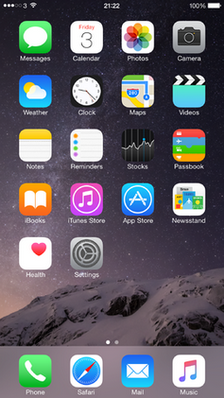

iOS 12
O iOS 8 é o oitavo maior lançamento do sistema operacional móvel iOS desenvolvido pela Apple Inc. , sendo o sucessor do iOS 7 . Ele foi anunciado na Worldwide Developers Conference da empresa em 2 de junho de 2014 e foi lançado em 17 de setembro de 2014. Ele foi sucedido pelo iOS 9 em 16 de setembro de 2015.
O iOS 8 incorporou mudanças significativas no sistema operacional. Ele introduziu o Continuity, um sistema multiplataforma ( Mac , iPhone e iPad
) que permite a comunicação entre dispositivos em diferentes categorias
de produtos, como a capacidade de atender chamadas e responder a SMS no Mac e no iPad.
A continuidade inclui um recurso "Handoff" que permite que os usuários
iniciem uma tarefa em um dispositivo e continuem em outro. Outras alterações incluíram um novo recurso de resultados de pesquisa do Spotlight Suggestions que fornece resultados mais detalhados;
Family Sharing, onde uma família pode vincular suas contas para
compartilhar conteúdo, com um dos pais como administrador com controles
de permissão; um teclado atualizado com o QuickType, fornecendo sugestões preditivas contextuais de palavras; e extensibilidade, que permite um compartilhamento mais fácil de conteúdo entre aplicativos.
Desenvolvedores de terceiros têm recursos adicionais para integrar seus
aplicativos mais profundamente no sistema operacional, incluindo
suporte a widgets no Notification Center e a capacidade de criar
teclados com os quais os usuários podem substituir o teclado iOS padrão.
As atualizações de aplicativos da versão incluíram o novo aplicativo Health
, que pode agregar dados de diferentes aplicativos de condicionamento
físico, bem como ativar uma ID médica acessível na tela de bloqueio para
emergências; suporte para o iCloud Photo Library no aplicativo Fotos, que permite que as fotos sejam sincronizadas e armazenadas na nuvem ; e o iCloud Drive , que permite aos usuários armazenar arquivos na nuvem e pesquisá-los em vários dispositivos. No iOS 8.4, a Apple atualizou seu aplicativo Music com um serviço de streaming chamado Apple Music e uma estação de rádio de 24 horas chamada Beats 1.
A recepção do iOS 8 foi positiva.
Os críticos elogiaram a Continuidade e a Extensibilidade como
principais recursos, facilitando o controle e a interação entre
diferentes aplicativos e dispositivos.
Eles também gostaram das sugestões de palavras de teclado do QuickType e
destacaram as Sugestões do Spotlight para tornar o iPhone "quase um
portal de pesquisa portátil para tudo".
No entanto, os analistas observaram que todo o potencial do iOS 8 só
seria realizado quando desenvolvedores de terceiros integrassem seus
aplicativos para oferecer suporte a novos recursos, especialmente
widgets no Notification Center.
Aproximadamente uma semana após o lançamento, o iOS 8 atingiu 46% do compartilhamento de uso do iOS.
Em outubro de 2014, foi relatado que a taxa de adoção havia "parado",
aumentando apenas "um único ponto percentual" em relação ao mês
anterior.
Esta situação foi atribuída à exigência de uma grande quantidade de
espaço livre para instalar a atualização, especialmente difícil para os
iPhones vendidos com 8 ou 16 gigabytes de espaço de armazenamento máximo. Em dezembro seguinte, o iOS 8 alcançou 63% de participação de uso, um notável aumento de 16% em relação à medição de outubro.

Desenvolvedor Apple Inc.
Modelo de origem Fechado , com componentes de código aberto
Lançamento inicial 17 de setembro de 2014
Último lançamento 8,4.1 (12H321) / 13 de agosto de 2015
Tipo de kernel Híbrido ( XNU )
Licença EULA proprietário, exceto para componentes de código aberto
Antecessor iOS 7
Sucessor iOS 9
iOS 8.4.1 rodando em um iPhone
6 Plus com os típicos aplicativos
pré-carregados do iOS.
Introdução e lançamento inicial
O iOS 8 foi apresentado na Worldwide Developers Conference da empresa em 2 de junho de 2014, com a primeira versão beta disponibilizada para os participantes da conferência após a apresentação principal.
O iOS 8 foi lançado oficialmente em 17 de setembro de 2014.
Atualizações
8.0.1
O iOS 8.0.1 foi lançado em 24 de setembro de 2014, como a primeira
atualização para o iOS 8. A atualização foi feita para trazer várias
correções de bugs; no entanto, a atualização foi retirada devido a um problema que desativava o Touch ID e a conectividade da rede celular em alguns modelos.
A Apple, em vez disso, recomendou que os usuários afetados
reinstalassem a versão inicial do iOS 8 e esperassem até que a versão
8.0.2 estivesse pronta.
8.0.2
O iOS 8.0.2 foi lançado em 25 de setembro de 2014, um dia após o lançamento do iOS 8.0.1. Ele incluía correções para os erros presentes na atualização anterior.
8.1
O iOS 8.1 foi lançado em 20 de outubro de 2014. A atualização introduziu o Apple Pay para iPhone 6 e 6 Plus nos Estados Unidos, adicionou o iCloud Photo Library no status beta
, retornou o Rolo da Câmera em Fotos e adicionou recursos Continuity,
que permitem aos usuários do iPhone para ler e enviar SMS e MMS do seu iPad e Mac . Ele também introduziu o Instant Hotspot, permitindo que os usuários de Mac ativem remotamente o recurso "Personal hotspot " em um iPhone próximo.
8.1.1
O iOS 8.1.1 foi lançado em 17 de novembro de 2014, com correções de bugs e melhorias de desempenho para o iPhone 4S e iPad 2.
8.1.2
O iOS 8.1.2 foi lançado em 9 de dezembro de 2014, com uma correção para um problema em que os toques comprados na iTunes Store seriam removidos de um dispositivo iOS.
8.1.3
O iOS 8.1.3 foi lançado em 27 de janeiro de 2015. A atualização incluiu
correções de erros e reduziu a quantidade de espaço de armazenamento
necessária para executar uma atualização do iOS.
8.2
O iOS 8.2 foi lançado em 9 de março de 2015. A atualização incluiu suporte para o Apple Watch , com o aplicativo Apple Watch no iPhone, oferecendo acesso à App Store e às opções de configuração; Saúde com opções para unidades de medida; bem como muitas melhorias de estabilidade e correções de bugs.
8.3
Antes do lançamento do iOS 8.3, a Apple anunciou um programa público de
testes beta, permitindo que os consumidores recebessem e testassem
versões futuras do software iOS antes do lançamento oficial.
O iOS 8.3 foi lançado em 8 de abril de 2015. A atualização incluiu
melhorias em emoji, como um seletor de teclado emoji atualizado que
organiza emoji em categorias, novos emoji diversificados e modificadores
de tons de pele; novos idiomas para Siri ; suporte para CarPlay sem fio; bem como grandes correções de bugs e melhorias.
8.4
O iOS 8.4 foi lançado em 30 de junho de 2015. A atualização introduziu o Apple Music e, portanto, reformulou o aplicativo Music existente com o serviço Apple Music. O iOS 8.4 também realocou audiolivros do aplicativo Música para o aplicativo iBooks.
8.4.1
O iOS 8.4.1 foi lançado em 13 de agosto de 2015, com várias correções para o Apple Music.
Recursos do sistema
Continuidade
O iOS 8 apresentou o Continuity, um sistema multiplataforma ( Mac , iPhone e iPad ) que permite a comunicação entre dispositivos em diferentes categorias de produtos.
A continuidade permite a funcionalidade de chamadas telefônicas para o
iPad e o Mac, em que as chamadas são encaminhadas pelo iPhone para um
dispositivo secundário. O dispositivo secundário funciona como um viva-voz. Isso também traz suporte a SMS para o iPad e Mac, uma extensão do recurso iMessage nas versões anteriores.
O Continuity adiciona um recurso chamado "Handoff", que permite que os
usuários iniciem uma tarefa em um dispositivo e continuem em outro, como
compor um e-mail no iPhone e depois continuá-lo no iPad antes de
enviá-lo no Mac. Para dar suporte ao Handoff and Continuity, os Macs precisavam ter o sistema operacional OS X Yosemite , lançado em outubro de 2014, bem como suporte para Bluetooth de baixa energia.
Spotlight
O iOS 8 introduziu o Spotlight
Suggestions, um novo recurso de pesquisa que se integra a muitos sites e
serviços para exibir resultados de pesquisa mais detalhados, incluindo
trechos de artigos da Wikipedia, notícias locais, acesso rápido a
aplicativos instalados no dispositivo, conteúdo do iTunes , horários de exibição de filmes e locais próximos e informações de vários sites. As sugestões do Spotlight estão disponíveis na tela inicial do iOS, bem como na barra de pesquisa do navegador da web do Safari.
Notificações
O Centro de Notificação suspenso foi agora reprojetado para permitir a funcionalidade do widget.
Os aplicativos de terceiros podem adicionar suporte a widgets em seus
aplicativos, permitindo que os usuários vejam informações no Centro de
Notificação sem precisar abrir cada aplicativo. Os usuários podem adicionar, reorganizar ou remover widgets a qualquer momento.
Exemplos de widgets incluem um aplicativo Meteorologia mostrando o
tempo atual e um aplicativo Calendário mostrando os próximos eventos.
As notificações agora são acionáveis, permitindo que os usuários
respondam a uma mensagem enquanto ela aparece como uma lista suspensa
rápida ou agem em uma notificação por meio do Notification Center.
Teclado
O iOS 8 inclui um novo recurso de digitação preditiva chamado
QuickType, que exibe previsões de palavras acima do teclado conforme o
usuário digita.
A Apple agora permite que desenvolvedores de terceiros façam
aplicativos de teclado com os quais os usuários possam substituir o
teclado iOS padrão.
Para maior privacidade, a Apple adicionou uma alternância de
configurações chamada "Permitir acesso total", que permite que o teclado
atue fora da caixa de proteção do aplicativo , como sincronizar dados do teclado com a nuvem, não é permitido usar teclados de terceiros para ditado por voz, e alguns campos de texto seguros não permitem entrada.
Compartilhamento Familiar
O iOS 8 introduziu o Family Sharing, que permite que até 6 pessoas
registrem contas exclusivas do iTunes que, em seguida, são vinculadas,
com um dos pais se tornando o administrador, controlando a experiência
geral.
As compras feitas em uma conta podem ser compartilhadas com os outros
membros da família, mas as compras feitas por crianças com menos de 13
anos de idade exigem aprovação dos pais. As compras feitas por adultos não serão visíveis para as crianças.
O Compartilhamento em família também se aplica aos aplicativos.
Um álbum compartilhado é gerado automaticamente no aplicativo Fotos de
cada membro da família, permitindo que todos adicionem fotos, vídeos e
comentários a um lugar compartilhado. Um recurso Ask to Buy permite que qualquer pessoa solicite a compra de
itens na App Store, na iTunes Store e na iBooks Store, bem como compras
no aplicativo e armazenamento do iCloud, com o administrador tendo a
opção de aprovar ou negar a compra.
Multitarefa
A tela multitarefa mostra uma lista de contatos recentemente chamados e favorecidos. O recurso pode ser desativado em Configurações.
Outro
O iOS 8 inclui uma opção adicional de roaming de dados em Configurações para usuários europeus, permitindo maior controle sobre o uso de dados no exterior.
O assistente pessoal de voz da Siri agora integrou o suporte do Shazam . Perguntando Siri "Que música é essa?" identificará qual música está tocando.
Chamadas de Wi-Fi foram adicionadas para permitir chamadas de celular através de Wi-Fi . As operadoras de telefonia móvel podem, então, habilitar a funcionalidade Voice-over-Wi-Fi em seus serviços.
Recursos do aplicativo
Fotos e Câmera
Aplicativo da câmera
O aplicativo Câmera recebe dois novos recursos; temporizador e temporizador. O lapso de tempo
registra quadros em intervalos mais curtos do que as freqüências
normais de filmes e os cria em filmes, exibindo eventos em uma
velocidade mais rápida.
O temporizador automático oferece ao usuário a opção de uma contagem
regressiva de três segundos ou dez segundos antes de tirar uma foto
automaticamente. Os iPads agora podem tirar fotos no modo panorâmico.
iCloud Photo Library
O iOS 8 adicionou o suporte à iCloud Photo Library ao aplicativo Fotos , permitindo a sincronização de fotos entre diferentes dispositivos Apple. Fotos e vídeos foram copiados em resolução completa e em seus formatos originais. Esse recurso quase significou que versões de fotos de baixa qualidade poderiam ser armazenadas em cache
no dispositivo, em vez de imagens em tamanho real, o que potencialmente
economiza espaço de armazenamento significativo em modelos com
disponibilidade de armazenamento limitada.
Pesquisar
O aplicativo Fotos recebeu uma pesquisa melhor, com diferentes opções
de categorização de pesquisa, incluindo Nas proximidades, Um ano atrás,
Favoritos e Casa, com base na geolocalização e na data da captura das fotos.
Editando
Além disso, o aplicativo Fotos obteve controles de edição mais precisos, incluindo melhor rotação; ferramentas de aprimoramento automático de um toque; e ajustes de cores mais profundos, como brilho, contraste, exposição e sombras. Há também uma opção para ocultar uma foto sem excluí-la.
Extensões
A Apple adicionou um recurso de extensibilidade no iOS 8, que permite
que filtros e efeitos de aplicativos de terceiros sejam acessados
diretamente de um menu do aplicativo Fotos padrão, em vez de importar e
exportar fotos por meio de cada aplicativo para aplicar efeitos.
Rolo da Câmera
Na versão inicial do iOS 8, a Apple removeu um recurso "Camera Roll" do aplicativo Photos.
O Rolo da Câmera foi uma visão geral de todas as fotos no dispositivo,
mas foi substituído por uma visualização de foto "Adicionados
Recentemente", que exibe fotos pela última vez que o usuário as
capturou.
Apesar de ter sido substituído por um álbum "Recentemente adicionado", a
remoção do Camera Roll provocou reclamações de usuários, que a Apple devolveu o recurso na atualização do iOS 8.1.
Mensagens
No iOS 8, o recurso Mensagens
recebe novos recursos para conversas em grupo, incluindo o modo Não
perturbe, que desativa as notificações de conversas, e também a
capacidade de remover participantes do bate-papo.
Um novo botão de bate-papo "Tocar para falar" permite que os usuários
enviem comentários rápidos de voz para um destinatário, e um botão
Gravar permite que os usuários gravem vídeos curtos.
Para interação entre dois usuários da Apple, o aplicativo Mensagens
permite que os usuários enviem imagens curtas, vídeos ou clipes de áudio
com um tempo de expiração de 2 minutos.
No aplicativo Configurações, o usuário tem a opção de que as mensagens
sejam excluídas automaticamente após um determinado período de tempo.
Safari
No navegador Safari
, os desenvolvedores agora podem adicionar suporte para o Safari
Password Sharing, que permite que eles compartilhem credenciais entre os
sites que possuem e os que possuem, reduzindo potencialmente o número
de vezes que os usuários precisam digitar credenciais para seus
aplicativos e serviços . O navegador também adiciona suporte para a API de gráficos WebGL.
iCloud Drive
Em um estilo semelhante ao de um gerenciador de arquivos , o iCloud Drive é um serviço de hospedagem de arquivos
que, depois de habilitado nas Configurações, permite que os usuários
salvem qualquer tipo de arquivo no aplicativo, e a mídia é sincronizada
com outros dispositivos iOS.
App Store
No iOS 8, a Apple atualizou a App Store
com uma guia "Explorar", que fornece uma descoberta de aplicativos
aprimorada, pesquisas de tendências na guia "Pesquisar" e a capacidade
de os desenvolvedores agruparem vários aplicativos em um único pacote
com desconto. Novos vídeos de "visualização" permitem que os desenvolvedores mostrem visualmente a função de um aplicativo.
Saúde
O HealthKit é um serviço que permite aos desenvolvedores criar aplicativos que se integram ao novo aplicativo Health. O aplicativo Saúde agrega principalmente dados de aplicativos de condicionamento físico
instalados no dispositivo do usuário, exceto as etapas e os voos
subidos, que são rastreados pelo processador de movimento no iPhone do
usuário. Os usuários podem inserir seu histórico médico em ID médico, que pode ser acessado na tela de bloqueio, em caso de emergência.
HomeKit
O HomeKit funciona como uma estrutura de software que permite que os usuários configurem o iPhone para configurar, se comunicar e controlar aparelhos domésticos inteligentes .
Ao projetar salas, itens e ações no serviço HomeKit, os usuários podem
ativar ações automáticas na casa por meio de um simples ditado de voz
para a Siri ou por meio de aplicativos.
Os fabricantes de dispositivos habilitados para o HomeKit precisam adquirir uma licença, e todos os produtos HomeKit precisam ter um coprocessador de criptografia. O equipamento fabricado sem o suporte do HomeKit pode ser ativado para
uso por meio de um produto "gateway", como um hub que se conecta entre
esses dispositivos e o serviço HomeKit.
Caderneta de Cadernos
O aplicativo Passbook no iOS 8 foi atualizado para incluir o Apple Pay , um serviço de pagamento digital, disponível no iPhone 6 e 6 Plus com o lançamento do iOS 8.1.
Music
Um novo serviço de streaming de música, o Apple Music , foi introduzido na atualização do iOS 8.4. Ele permite que os assinantes ouçam um número ilimitado de músicas sob demanda por meio de assinaturas.
Com o lançamento do serviço de música, o aplicativo Music padrão no iOS
foi renovado visual e funcionalmente para incluir o Apple Music, bem
como a estação de rádio ao vivo 24 horas Beats 1.
Notas
O Notes recebeu suporte para edição de rich text , com a capacidade de negrito, itálico ou sublinhado de texto; e suporte de imagem, permitindo aos usuários postar fotos no aplicativo.
Tempo
O aplicativo Weather agora usa dados meteorológicos do The Weather Channel em vez do Yahoo!. O aplicativo também recebeu pequenas alterações na interface do usuário.
Dicas
O iOS 8 adicionou um novo aplicativo "Dicas", que mostra dicas e informações breves sobre os recursos do iOS semanalmente.
Toque em ID
O iOS 8 permite que o Touch ID seja usado em aplicativos de terceiros.
Recepção
O iOS 8 recebeu críticas positivas. Brad Molen, do Engadget, destacou o Continuity como um grande avanço para usuários com vários dispositivos da Apple.
Ele também elogiou o recurso Extensibilidade, permitindo que os
aplicativos compartilhem dados e gostou do suporte para teclados de
terceiros.
No entanto, Molen observou que algumas das novas introduções - Family
Sharing, Continuity e iCloud Drive - exigem um maior mergulho no
ecossistema da Apple para funcionar. Ele gostava particularmente de notificações acionáveis e suporte a widgets de terceiros no Notification Center. Charles Arthur, do The Guardian, também gostou da Extensibilidade, bem como da nova funcionalidade de sugestões de palavras do QuickType no teclado do iOS.
Ele criticou a falta de uma opção para escolher aplicativos padrão e
também criticou o menu Configurações por ser confuso e pouco intuitivo. Darrell Etherington, do TechCrunch,
elogiou as melhorias no iMessage, escrevendo: "O melhor para mim foi a
capacidade de silenciar e deixar conversas em grupo, algo que eu senti
falta desde a introdução das conversas do iMessage em grupo."
Ele gostou dos novos recursos de pesquisa e edição do Photos, e do
recurso QuickType no teclado, mas destacou especialmente as Sugestões do
Spotlight como "um dos melhores recursos do iOS 8, mesmo que seja uma
pequena adição de serviço", observando que " iPhone quase um portal de
busca portátil para tudo". Martin Bryant da The Next Web
escreveu que "Os verdadeiros avanços aqui ainda estão por vir",
acrescentando que "a Apple incluiu demonstrações do que pode ser feito,
mas o verdadeiro poder do que está sob o capô será realizado ao longo
dos próximos dias, semanas e meses "à medida que os desenvolvedores de
terceiros incorporam gradualmente novos recursos em seus aplicativos.
Em 23 de setembro de 2014, "aproximadamente uma semana" após o lançamento do iOS 8, a adoção do iOS 8 pelo usuário atingiu 46%. Em outubro de 2014, Andrew Cunningham da Ars Technica
informou que a taxa de adoção de usuários do iOS 8 havia "parado",
subindo apenas "um único ponto percentual" desde a medição de setembro
anterior, de 46%. Cunningham culpou a atualização " over-the-air " exigindo 5 gigabytes
para instalar, uma "quantidade anormalmente grande" que pode ter
desafiado aqueles que usam dispositivos de 8 gigabytes e 16 gigabytes. Como alternativa, a Apple ofereceu a atualização através de seu software iTunes
, mas Cunningham observou que "Uma conexão com o iTunes vai ficar ainda
mais fora do caminho atualmente do que há alguns anos, até porque a
Apple passou os últimos três anos. anos treinando pessoas para usar seus
iDevices independentemente de seus computadores ". Em dezembro, um novo relatório da Ars Technica afirmou que o uso do iOS 8 havia aumentado para 63%, "um sólido 16%".
Problemas
Taxa de falha de aplicativo
Um estudo da Apteligent
(antigo Crittercism) descobriu que a taxa de queda de aplicativos em
seus testes foi de 3,56% no iOS 8, superior aos 2% encontrados no iOS
7.1.
8.0.1 atualizar problemas
Em setembro de 2014, a atualização do iOS 8.0.1 causou problemas significativos com o Touch ID no iPhone 6 e a conectividade da rede celular em alguns modelos. A Apple afirmou que os usuários afetados devem reinstalar a versão inicial do iOS 8 até que a versão 8.0.2 esteja pronta.
O iOS 8.0.2 foi lançado um dia após o 8.0.1, com uma correção para problemas causados pela atualização 8.0.1.
Bugs diversos
A Forbes publicou vários artigos enfocando problemas no iOS 8 com relação a Wi-Fi e bateria, Bluetooth, e calendário.
Queda de mensagem de texto "poder efetivo"
Em maio de 2015, as agências de notícias informaram sobre um bug em que
o recebimento de uma mensagem de texto com uma combinação específica de
símbolos e caracteres árabes fazia com que o aplicativo Mensagens
falhasse e o iPhone fosse reinicializado.
O bug, chamado "poder efetivo", poderia potencialmente reiniciar continuamente um dispositivo se a mensagem estivesse visível na tela de bloqueio.
A falha foi explorada com o propósito de trolling , causando intencionalmente a queda dos telefones dos outros.
O bug foi corrigido no iOS 8.4, uma atualização lançada em junho de 2015.
Hoaxes
Em setembro de 2014, uma propaganda fraudulenta da Apple para um suposto recurso chamado "Wave" do iOS 8 circulou no Twitter , o que prometia aos usuários que eles seriam capazes de recarregar seu iPhone aquecendo-o em um forno de microondas .
Esse recurso não existe, e a mídia citou várias pessoas relatando no
Twitter que eles haviam destruído seu iPhone seguindo o procedimento
descrito no anúncio.